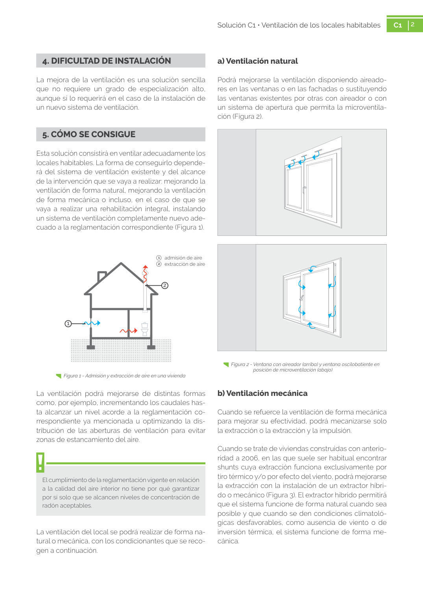

<!doctype html>
<html lang="es"><head><meta charset="utf-8">
<meta name="viewport" content="width=device-width, initial-scale=1">
<title>GUIA · a) Ventilación natural</title><link rel="stylesheet" href="../estilo.css">
</head><body>
<nav><a href="../index.html">Índice</a> › <a href="../doc/guia-pdf-58ad6aa65696-sin-fecha-8e711eace63c.html">GUIA</a> › a0007</nav>

<header class="meta">
<p><a href="../doc/guia-pdf-58ad6aa65696-sin-fecha-8e711eace63c.html">GUIA</a> · a) Ventilación natural · versión sin-fecha · capa guia</p>
</header>
<div class="cita"><strong>Cita:</strong> GUIA · ID técnico a0007 · a) Ventilación natural · páginas físicas pág. 2 (impresas: ['2'])</div>
<p>Formatos: <a href="../../contenido/docs/GUIA-PDF-58ad6aa65696/sin-fecha__8e711eace63c/apartado/a0007__a-ventilacion-natural.json">JSON compacto</a> · <a href="../../contenido/docs/GUIA-PDF-58ad6aa65696/sin-fecha__8e711eace63c/apartado/a0007__a-ventilacion-natural.md">Markdown</a> · <a href="../../contenido/docs/GUIA-PDF-58ad6aa65696/sin-fecha__8e711eace63c/fuente.pdf">PDF fuente</a></p>
<p><a href="../doc/guia-pdf-58ad6aa65696-sin-fecha-8e711eace63c.html">Ámbito del documento</a> · <a href="../doc/guia-pdf-58ad6aa65696-sin-fecha-8e711eace63c.html#ambito">texto del ámbito</a> ·
<a href="../doc/guia-pdf-58ad6aa65696-sin-fecha-8e711eace63c.html">documento y tablas</a></p>
<nav><a href="guia-pdf-58ad6aa65696-sin-fecha-8e711eace63c__a0006.html">← 2. CUÁNDO SE UTILIZA</a> <a href="guia-pdf-58ad6aa65696-sin-fecha-8e711eace63c__a0008.html">b) Ventilación mecánica →</a></nav>
<h1>a) Ventilación natural</h1>
<p>Tipo: tablas, figuras · nivel 3 · sección estimada: 2. CUÁNDO SE UTILIZA · padre: a0006</p>
<pre class="literal">a) Ventilación natural
Podrá mejorarse la ventilación disponiendo aireado­
res en las ventanas o en las fachadas o sustituyendo
las ventanas existentes por otras con aireador o con
un sistema de apertura que permita la microventila­
ción (Figura 2).
Figura 2 - Ventana con aireador (arriba) y ventana oscilobatiente en
posición de microventilación (abajo)</pre>
<h2>Tablas en estas páginas</h2><ul><li>p. 2 · <a href="../../contenido/docs/GUIA-PDF-58ad6aa65696/sin-fecha__8e711eace63c/tabla/p0002_t01.json">p0002_t01.json</a> · <a href="../../contenido/docs/GUIA-PDF-58ad6aa65696/sin-fecha__8e711eace63c/tabla/p0002_t01.csv">.csv</a></li></ul><h2>Página visual</h2><figure><a href="../../contenido/docs/GUIA-PDF-58ad6aa65696/sin-fecha__8e711eace63c/figura/p0002.png"></a><figcaption>Página visual 2 (fuente para fórmulas/tablas/figuras)</figcaption></figure><p class="aviso">PDF fuente redistribuible: copia fiel enlazada en esta página (SHA256 verificado).</p>
<footer>Generado estáticamente desde JSON normalizado; sin JavaScript ni servicios externos.
El JSON es la fuente; este HTML es caché reproducible.</footer>
</body></html>
